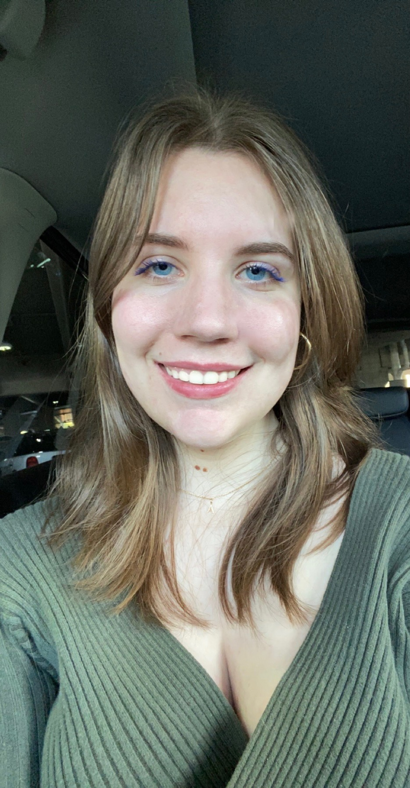

Contact
Alex Saunders
Harrisonburg, VA
My Email

Skills and Specialties
Languages, Platforms, Frameworks
HTML5, JavaScript, Python, CSS, WordPress
Servers & Operating Systems
MacOS Mojave, Windows
Applications
Microsoft Office (Word, Excel, Powerpoint, Sharepoint, Outlook), Adobe Creative Cloud (Photoshop, InDesign, Illustrator, Acrobat)
Education
James Madison University
Fall 2019 - Present
Bachelor of Arts
- Major: Media Arts and Design (SMAD)
Saint Gertrude High School
Fall 2015 - Spring 2019
High School Diploma
Experience
February 2022 - Present
Fink's Jewelers, Richmond, VA
Administrative Support Assistant
- Assisted with special projects supporting sales and marketing campaigns.
- Developed administrative processes to achieve organizational objectives to improve office and sales efficiency.
- Composed correspondence, reports, and meeting notes.
- Managed physical and digital files, monitored data and updated reports to coordinate project materials.
September 2021 - Present
The Bluestone
Designer, Harrisonburg, VA
- Consulted on tone, style, and subject matter, driving layout and design.
- Reveiwed, edited, and applied style rules to design, complying with company guidelines.
- Researched and studied information to plan project concepts.
Volunteer Experience
January 2017 - December 2018
Bon Secours St. Mary's Hospital, Richmond, VA
Hospital Volunteer
- I assisted the patients during the discharge process from the hospital and helped patients to their cars along with their belongings.
- Maintain knowledge of community services and resources available to patients.
- I've worked at the hospital's information desk by answering visitors' questions and providing directional information.
Honors and Awards
President's List
Issued by James Madison University
Fall 2019
Dean's List
Issued by James Madison University
Fall 2022